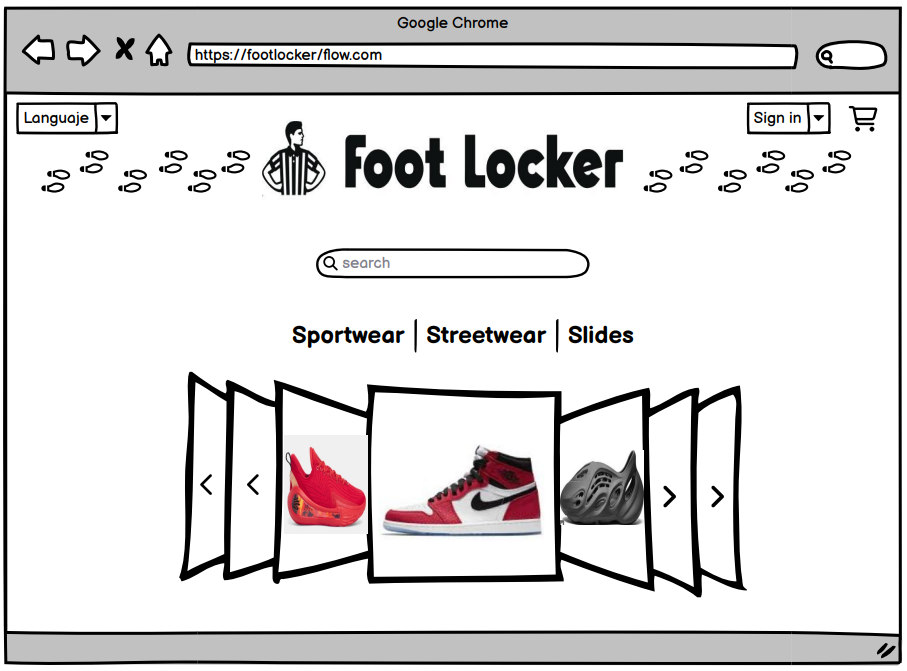
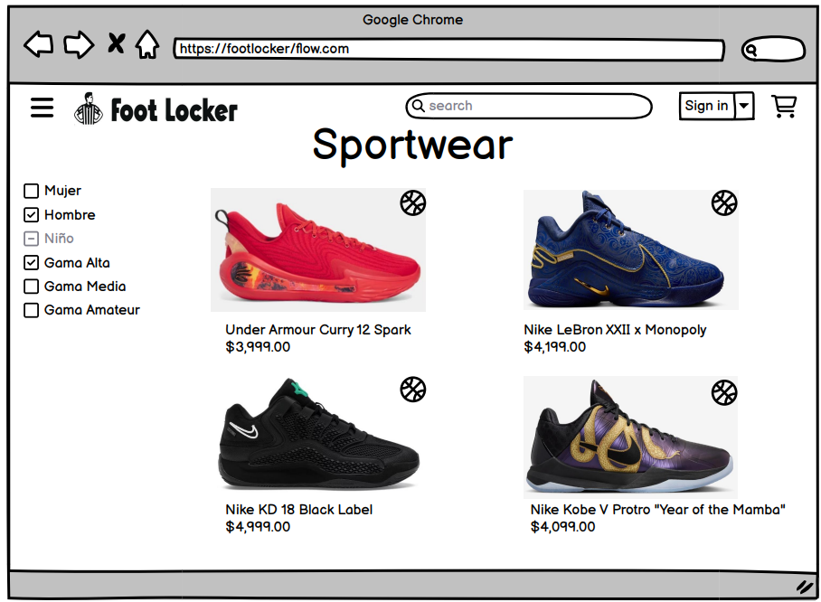
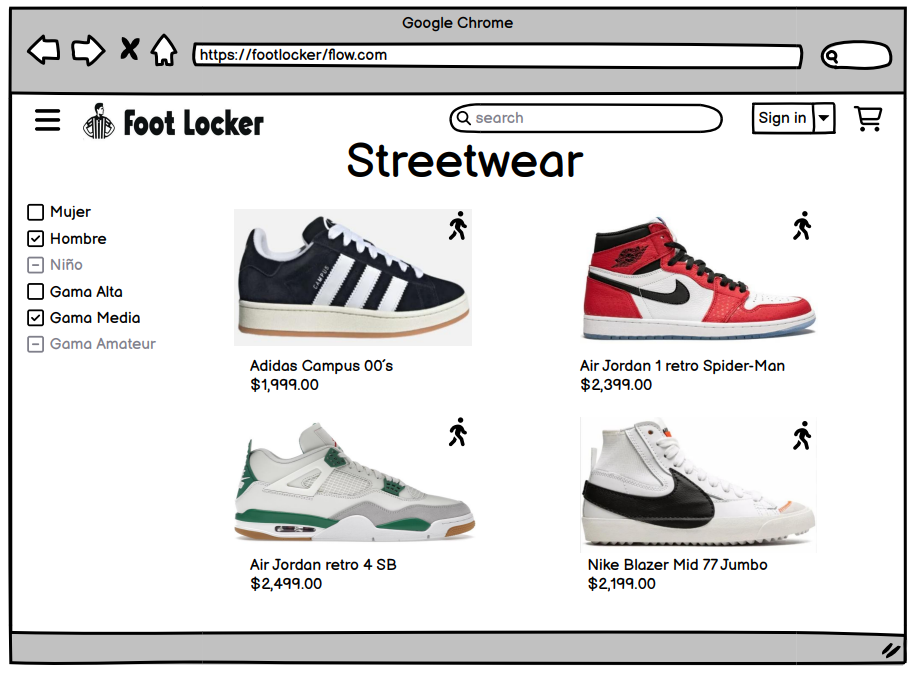

Estas son mis páginas favoritas:
Soy estudiante de la carrera de Ingeniería en Tecnologías de la Información y Comunicaciones (ITICS). Cuento con formación académica en programación, bases de datos y desarrollo web. Tengo experiencia desarrollando proyectos académicos enfocados en aplicaciones de escritorio y páginas web.
Mis áreas de especialización incluyen el desarrollo en HTML, CSS, Java, MySQL y el uso de herramientas como Visual Studio y MySQL Workbench. Mi enfoque de trabajo se basa en el aprendizaje constante, el trabajo en equipo y la creación de soluciones funcionales y bien estructuradas.



Desarrollo de un sistema de gestión para una tienda de tenis deportivos y casuales. El proyecto permite administrar productos, marcas, precios e imágenes mediante un formulario CRUD.
Tecnologías utilizadas: Java, Windows Forms, MySQL, ADO.NET, Visual Studio 2022.
Resultados obtenidos: Un sistema funcional con conexión a base de datos, uso de Data Binding y patrón DAO.